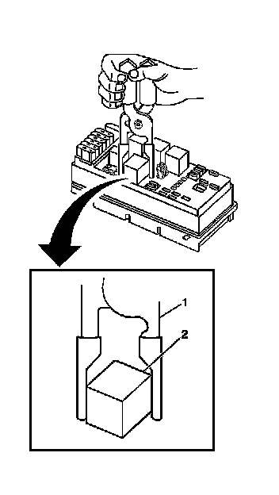

Relay Replacement (Within an Electrical Center)
Relay Replacement (Within an Electrical Center)
Tools Required
J 43244 Relay Puller Pliers
Removal Procedure
1. Remove the electrical center cover.
2. Locate the relay. Refer to Electrical Center Identification Views (Application and ID) to locate the electrical center where the relay exists.
Important:
* Always note the orientation of the relay.
* Ensure that the electrical center is secure, as not to put added stress on the wires or terminals.

3. Using the J 43244 (1) position the tool on opposing corners of the relay (2).
Notice: Use J43244 to pull the relay straight out from the electrical center terminals. The use of pliers or a flat bladed tool could damage the electrical center.
4. Remove the relay (2) from the electrical center.
Installation Procedure
1. Install the relay (2) in the same position as removed.
2. Install the electrical center cover.